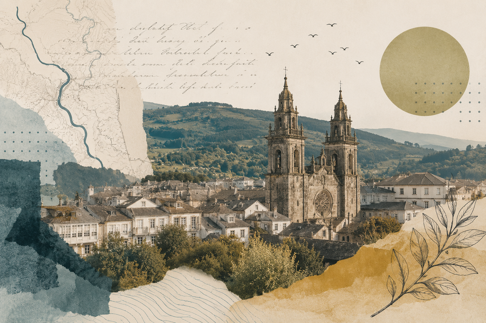
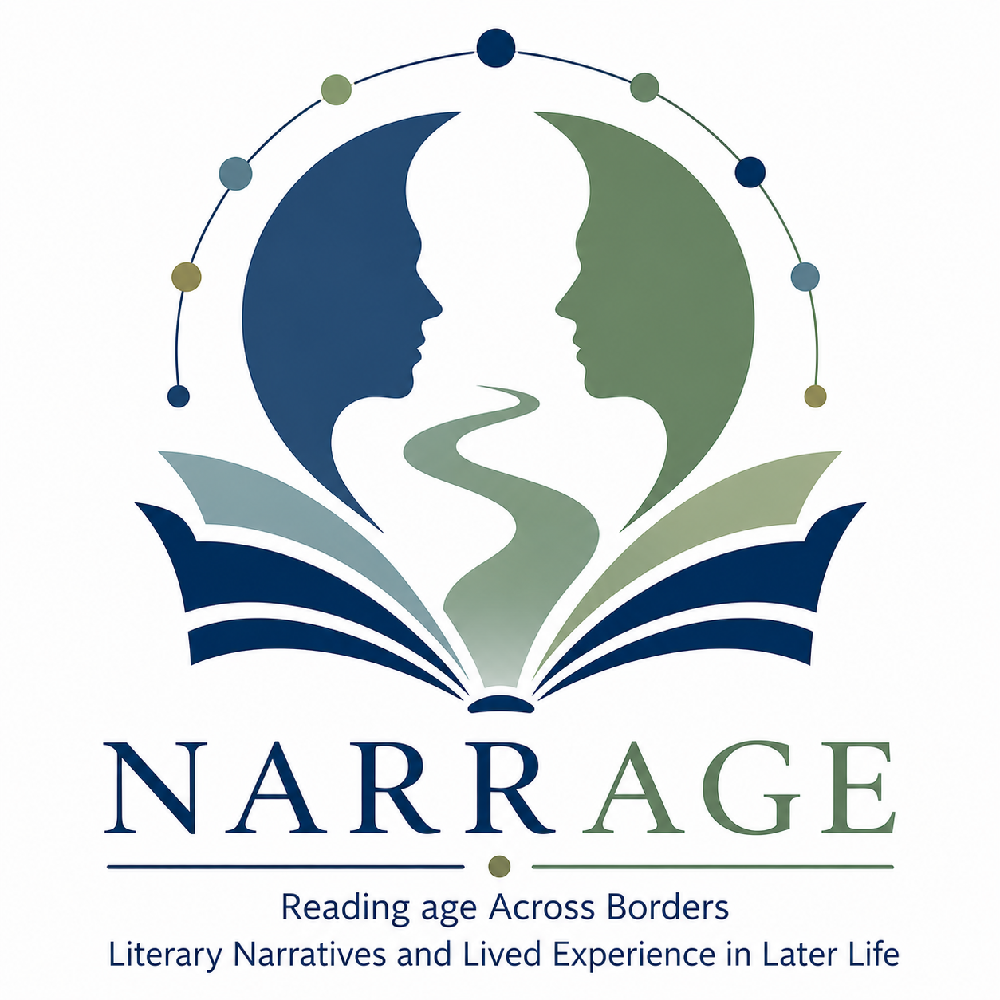

Cultural citizenship
Participation, access to culture and the development of active cultural communities.
A lab connecting the humanities, citizenship and cultural intervention from Galicia.

THE LAB
SENTIDIÑO is a cultural citizenship and applied humanities lab connecting research, creation and place-based intervention. We work to turn humanistic knowledge into tools for interpreting contemporary problems, activating communities and developing new forms of cultural participation.
Discover SENTIDIÑO →AREAS OF WORK
SENTIDIÑO develops its work across four interconnected areas.
Participation, access to culture and the development of active cultural communities.
Transferring humanistic knowledge to concrete problems and contexts.
New ways of interpreting, activating and communicating local heritage and cultures.
Digital technologies serving research, cultural mediation and participation.
PROJECTS

Literature, memory and place
Mapping, augmented reality and cultural itineraries exploring the relationships between literature, memory and place.
Discover the project →
Narrative Approaches to Re-Reading Ageing in Europe
A European project connecting literary studies, psychology, geriatrics, digital humanities, social work and applied humanities to explore the relationships between narratives, ageing and lived experience.
Discover the project →ACTIVITIES
RESOURCES
TEAM